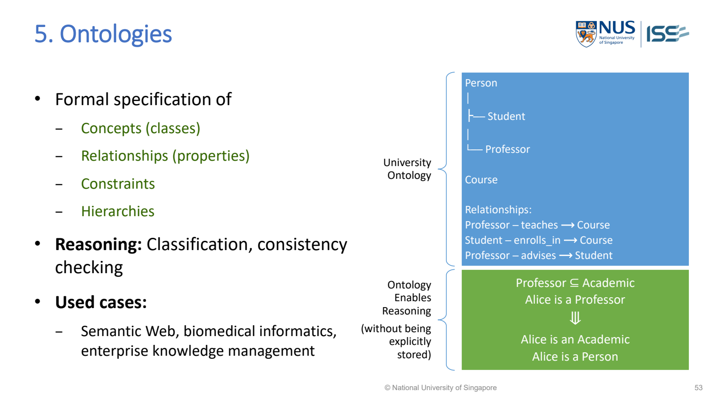
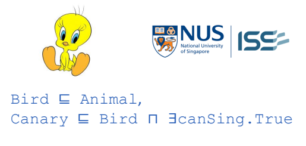

Ontologies（本體）
The lecture defines an ontology as a formal specification of concepts/classes, relationships/properties, constraints and hierarchies. Know what these elements mean and how to write the lecture’s representation.

MR-Day 2_JR_v1.pdf · PDF p.52 / printed slide 53
Write the university ontology
Classes: Person, Student, Professor, Course Student ⊆ Person Professor ⊆ Person Professor ─teaches→ Course Student ─enrolls_in→ Course Professor ─advises→ Student
| Element | Meaning |
|---|---|
| Class | A kind of entity, such as Professor or Course. |
| Hierarchy | A more specific class belongs within a broader class; Professor is a kind of Person. |
| Property/relation | A named connection such as teaches or advises. |
| Constraint/axiom | A formally stated condition or relationship the model uses. Do not invent one merely because it sounds plausible. |
| Individual | A particular entity, such as Alice; an individual is not a class. |
What the lecturer’s Alice example actually gives
Professor ⊆ Academic Alice is a Professor Therefore: Alice is an Academic
The same slide’s university hierarchy shows Professor under Person, so Alice is also a Person. No extra Academic ⊆ Person statement is needed to justify those two results.
Read each hierarchy link in its stated direction. Alice being Academic does not, by itself, prove Alice is Professor; every Academic need not be a Professor.
Canary ontology notation from the comparison slide

Bird ⊑ Animal Canary ⊑ Bird ⊓ ∃canSing.True
| Symbol | Read it as |
|---|---|
| ⊑ | is a subclass of / is included in |
| ⊓ | AND: both descriptions apply |
| ∃ | there exists at least one relation of the specified kind |
| canSing.True | The singing relation used in this lecture notation |
In plain words: Bird is a kind of Animal. Canary is a Bird with the stated singing relation. Therefore a Canary is also an Animal. Do not reverse this to say all Animals are Canaries.
The original comparison slide also expresses the bird example as a semantic network and a frame. Here the Canary example stays on the Ontologies page; Semantic Networks uses the original Mary/John diagram.
If asked to draw or write an ontology
- Identify the relevant classes.
- Show the supplied class hierarchy.
- Name the properties/relations and the kinds of entities they connect.
- Write any given constraints/axioms; define unfamiliar symbols.
- Add an individual fact if useful, then show one conclusion justified by the stated hierarchy.
Ontology versus knowledge graph: the lecture says ontology defines what is legal and provides the semantic structure; a knowledge graph stores actual entities and facts. See the knowledge-graph page for triples.
Do not automatically reject a record just because an arrow looks unusual. A consistency conclusion needs the actual declared constraints and reasoning rules; a diagram alone is insufficient.
Sources: MR-Day 2_JR_v1.pdf · PDF p.52 / printed slide 53 (university ontology); PDF p.53 / printed slide 54 (comparison notation); PDF p.58 / printed slide 59 (ontology versus knowledge graph). No official sample question is claimed to require ontology when it explicitly asks for frames.